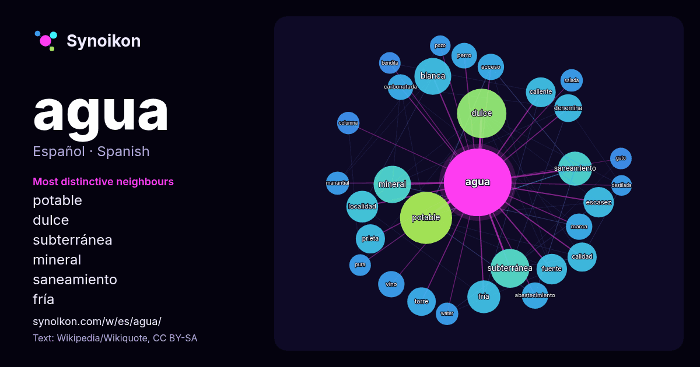

Español · palabra popular
agua
“water” · Las palabras encontradas a su alrededor en 1606 apariciones de Wikipedia, Wikiquote.

Vecinos más característicos
- potable 67×
- dulce 49×
- subterránea 37×
- mineral 30×
- saneamiento 30×
- fría 26×
- blanca 25×
- escasez 23×
- prieta 23×
- caliente 22×
- abastecimiento 18×
- carbonatada 18×
- denomina 18×
- vino 15×
- perro 14×
- calidad 14×
- manantial 14×
- salada 14×
- water 14×
- bendita 13×
× = cuántas veces más que en el texto general de Wikipedia.
Vecinos más frecuentes
- potable 70
- dulce 63
- subterránea 39
- mineral 36
- blanca 35
- saneamiento 30
- fría 28
- localidad 26
- escasez 24
- fuente 24
- caliente 23
- mar 23
- calidad 22
- municipio 22
- prieta 22
- conocido 21
- torre 21
- conocida 20
- denomina 20
- humano 20
En contexto
- El agua (del latín aqua) es un compuesto inorgánico cuya molécula está constituida por dos átomos de hidrógeno y uno de oxígeno (H2O) unidos por un enlace Wikipedia snippets · Agua
- El agua potable o agua apta para el consumo humano y animal se denomina al agua que puede ser consumida sin causar problemas de salud al beberse o preparar Wikipedia snippets · Agua potable
- El agua de mar o agua salada es una disolución hecha o basada en agua que compone los océanos y mares de la Tierra. Es salada por la concentración de sales Wikipedia snippets · Agua de mar
- desarrollados y en la mayoría de los que están en vías de desarrollo, el agua llega a los hogares mediante un sistema de tuberías. Este servicio requiere Wikipedia snippets · Agua entubada
- El agua carbonatada es agua que contiene ácido carbónico (H2CO3) que, al ser inestable, se descompone fácilmente en agua y dióxido de carbono (CO2), el Wikipedia snippets · Agua carbonatada
- El agua subterránea es agua presente bajo la superficie terrestre, en espacios rocosos o suelos porosos o en los huecos de las formaciones rocosas. Cerca Wikipedia snippets · Agua subterránea
- El agua bendita es el agua que ha sido bendecida por un presbítero u obispo para la celebración del sacramento del Bautismo o para bendecir objetos, entre Wikipedia snippets · Agua bendita
- El agua u oxidano (H2O) es un compuesto químico inorgánico formado por dos átomos de hidrógeno (H) y uno de oxígeno (O). Esta molécula es esencial en Wikipedia snippets · Molécula de agua
Más palabras
- arte
- bosque
- caballo
- camino
- campana
- canción
- ciencia
- ciudad
- clima
- comida
- corazón
- desierto
- dinero
- dios
- espejo
- estrella
- familia
- fuerza
- gato
- historia
- invierno
- isla
- jardín
- lengua
- lluvia
- madre
- mapa
- miel
- montaña
- muerte
- naturaleza
- oro
- otoño
- pan
- perro
- puente
- reloj
- sal
- salud
- silencio
- sombra
- tiempo
- tormenta
- trabajo
- tren
- té
- verano
- verdad
- vida
Precalculado el 2026-10-09 con los ajustes predeterminados (±5 palabras, corpus mediano). El mapa interactivo puede actualizarlo con datos en vivo.
Interfaz traducida automáticamente; se agradecen correcciones.